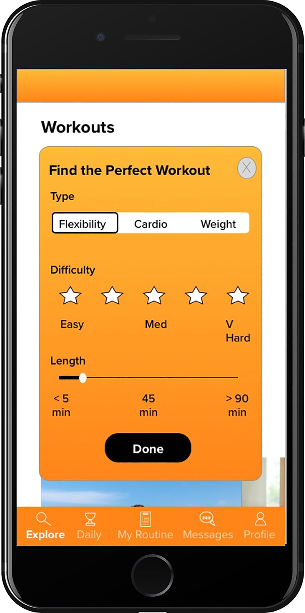

A user interface design case study for Fitted - a responsive web app designed to help everyday people achieve their fitness goals. I designed user task flows for key features, transformed them into
wireframes using Sketch and Balsamiq, and then created a high-fidelity prototype using
Invision. I also established a comprehensive style guide with my color, typography, and
imagery decisions.
Environment: Lives in an apartment without a gym with her boyfriend and 3 year old daughter
Entry Point: Referred by a friend
Rebecca's Goals
Rebecca wants to lose weight and get in shape, as her sedentary job doesn’t allow a
lot of time for exercising.
Rebecca wants to lose weight and get in shape, as her sedentary job doesn’t allow a
lot of time for exercising.
As a beginner to working out, Rebecca also wants something that will help her learn
how to properly exercise.
Rebecca wants help finding routines she can enjoy.
Tasks
Rebecca wants to be able to find exercises that match her goals of losing weight and
getting in shape.
In addition, she wants to find short exercises that she can do multiple times per day in
between other activities.
She wants the tool to keep her motivated as well, as her schedule can often be
distracting.
User Stories
As a new user, I want to learn about different exercises, so that I can figure out what is
best for me.
As a new user, I want to be shown how the exercises are done, so that I know I’m
doing them correctly.
As a frequent user, I want to be able to schedule exercises for working out, so that I
build positive habits.
As a frequent user, I want to be able to earn achievements or rewards, so that I can
stay motivated.
As a frequent user, I want to complete daily challenges, so that I can have an
additional way to stay motivated.
As a frequent user, I want to track progression and record what I’ve done, so that I
can see my progress over time.
As a frequent user, I want to be able to share routines with my friends who may also
be interested, so that I can encourage them to become healthier.
Ideation
With a deeper understanding of the problem and the proto-persona, I developed task
flows to begin the ideation process. Task flows inform the information architecture (or
layout) of a project. By laying out each step users will take in achieving their goal, I
generated ideas on how to best design each screen to make it as easy and enjoyable
as possible for the user.
Low Fidelity Wireframes
Next comes the fun part. After creating task flows based on my persona, I mapped out
early wireframes of the screens using Balsamiq. These wireframes are the fields in
which the user flows take place.
From the user stories, I developed wireframes to help Rebecca with the following:
Search and filter workouts
Start a workout challenge (or competition) with a friend
View a video tutorial of the workout
Add the workouts to a routine
Grids
With sketches quickly drawn on Balsamiq, I opened up Sketch to create a more
organized view of these drawings using grids. I use a 12 column grid on my mobile
design sketches because users are already familiar with this layout. This process is
another opportunity for me to visually brainstorm my lo-fi wireframes.
Mid Fidelity Wireframes
With the information architecture in place, I brought in interface design elements to
make the app look more real.
As I increased the fidelity of these wireframes, I focused on the 6 following visual design
elements:
Visual Hierarchy and Spacing
UI Design Patterns
Typography
Color
Imagery
Iconography

I like to keep things fairly big picture leading up to this stage, prioritizing layout decisions
and planning interactions across each task flow
Designing the "My Routine" page
At the mid-fidelity stage, I came to a major decision point. There were many options that
could work for the “My Routine” page . I asked myself “What is the user trying to
accomplish on this screen?” What is the primary, secondary, and maybe even tertiary
objectives with this page?
The overall objective of Fitted is to motivate people to workout. Fitness is a journey and
it can get overwhelming if you think about all the workouts you have in front of you
before your end goal. So I wanted to help users focus on today. That’s why the My
Routine screen shows the users only what they have scheduled for today, with the main
call to action being “Add Exercises”.
Note: The call to action was changed to “Start Exercise” in high fidelity wireframes.
High-Fidelity Wireframes
The difference between mid-fidelity and high-fidelity mockups is simple. If it looks like an
app that you would use, it’s high-fidelity. If the design isn’t there yet, it’s mid-fidelity.
Most of the time, this comes down to refining the details of visual design.
The guiding question is always the same: How can I remove obstacles for the user?
Here’s an example:
The first major change was to add a dark grey gradient to the background. This
gradient adds a more polished, defined look for the app.
The next change was focused on improving the visual hierarchy of this screen. I
asked myself “What is the user trying to achieve?” They want to see their
progress. So I gave this content more space and reduced the size of the banner
image and header text to help bring the user’s attention directly to the data.
I also changed the data visualization. Rather than showing the user's progress on
one goal at a time, I opted for a layout that allowed the user to see their progress
on each of their goals all on one screen. This helps with the efficiency of the
screen.
I changed the primary CTA on this screen from “Start a Challenge” to a plus
button. This plus button allows the user to add a new goal, which is more
relevant to the rest of the content on this screen.
Conclusion
This design successfully motivates users to reach their fitness goals by forming a
cohesive brand identity. This was achieved by maintaining a fairly limited color palette,
consistent design elements, and encouraging UX writing - guiding users to create a
workout routine based on their skill level and interests.
Users can set fitness goals and see their progress on their profile page. These goals
are helpfully categorized by fitness outcome.
If users need more external motivation, social features such as competitions and daily
challenges offer just that.